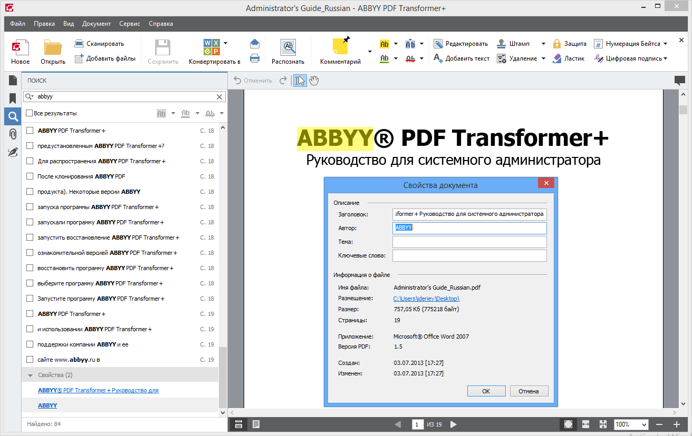

ABBYY PDF Transformer
ABBYY PDF Transformer+ - это программа для работы с файлами PDF, которая позволяет создавать, редактировать и конвертировать PDF-документы. Она была разработана компанией ABBYY, которая является одним из ведущих разработчиков программного обеспечения для распознавания текста и создания электронных документов.
 PDF Transformer+ использует технологии OCR (оптическое распознавание символов) и ICR (распознавание рукописного текста) для распознавания текста в PDF-документах и конвертации их в редактируемые форматы, такие как Microsoft Word, Excel и другие.
ABBYY PDF Transformer+ имеет удобный интерфейс, который позволяет работать с PDF-документами без необходимости иметь специальные знания в области IT. Она также имеет функции, которые позволяют объединять несколько PDF-документов в один, разделять большие документы на отдельные страницы, добавлять комментарии и многое другое.
Разработка ABBYY PDF Transformer+ была основана на многолетнем опыте работы компании в области распознавания текста и создания электронных документов. Она была создана с использованием современных технологий и методов разработки программного обеспечения.
ABBYY PDF Transformer+ является коммерческим продуктом и доступна для приобретения на официальном сайте компании ABBYY.
Официальный сайт ABBYY